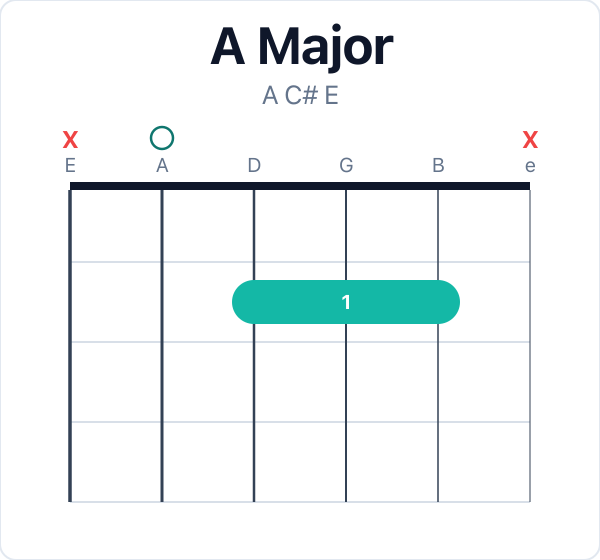
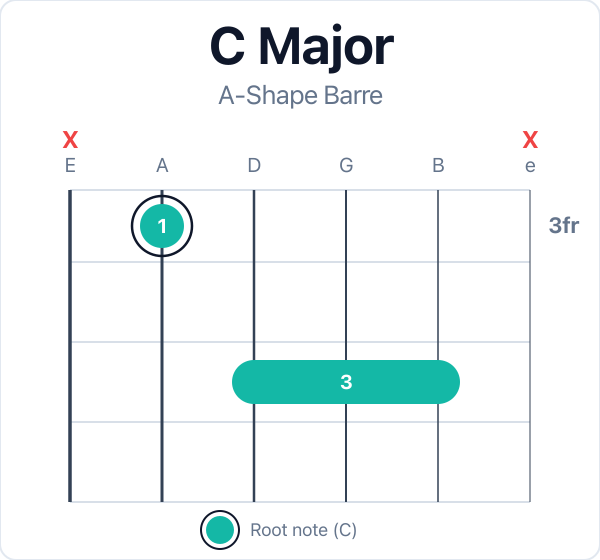
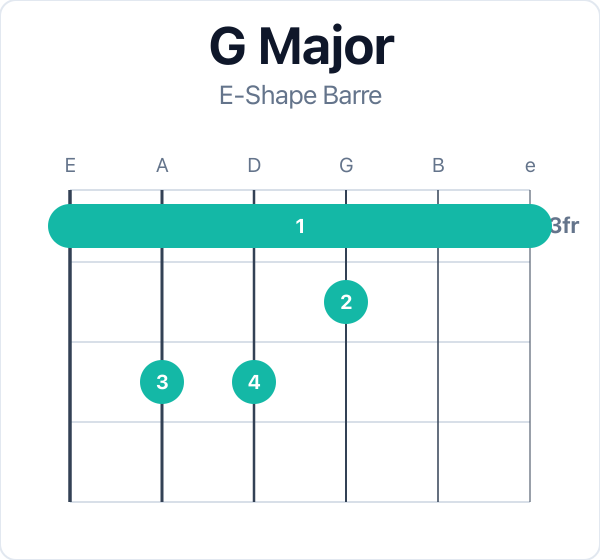

Cream · Intermediate
Position 1 e|-------------------------------------------| B|-------------------------------------------| G|-------------------------------------------| D|---12--12--10--12--------------------------| A|-------------------12--11--10--------------| E|-------------------------------10--13--10--|
Position 2 e|-------------------------------------------| B|-------------------------------------------| G|---12--12--10--12--------------------------| D|-------------------12--11--10--------------| A|-------------------------------10--13--10--| E|-------------------------------------------|
Position 1 (repeat) e|-------------------------------------------| B|-------------------------------------------| G|-------------------------------------------| D|---12--12--10--12--------------------------| A|-------------------12--11--10--------------| E|-------------------------------10--13--10--|


